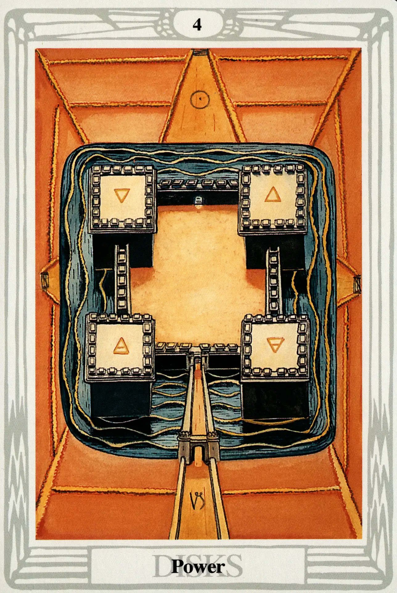

Disks
Four of Disks
Power

(Sol in Capricorn)
20° to 30° Capricorn
January 10 to January 19
Original Title: Lord of Earthly Power.
Golden Dawn Model: From clouds at the bottom of the card, a hand appears holding a branch of a rose tree. There are no flowers or buds other than one white rose in the center in full bloom. Disks are arranged as if on the points of a square.
Princess Scale for Chesed: Deep Azure, flecked Yellow.
The Four Scales for Sol: Orange; Gold Yellow; Rich Amber; Amber, rayed Red.
The Four Scales for Capricorn: Indigo; Black; Blue-black; Cold Dark Grey, nearing Black.
Formula: 4 (Chesed) of Disks (Assiah) + Sol in Capricorn = POWER
This card is well named. It is Sol in Capricorn, and to the ancients, the greatest display of celestial power occurred each year when the Sun entered Capricorn and conquered death by reversing its southward plunge into darkness.
In The Book of Thoth, Crowleys describes how “Chesed shows the establishment of the Universe in three dimensions, that is, below the Abyss.” In “The Rite of Saturn,” he calls it “The Fortress that is upon the Frontier of the Abyss.” This is a perfect description of the Four of Disks.
To properly view this card, we must imagine ourselves hovering hundreds of feet above a foursquare walled citadel surrounded by a wide moat. We are approaching from the bottom of the card and are not yet above dead center. Four tall watch-towers crowned with battlements displaying the symbols of the elements rise from the corners and tower far above the walls. The main entrance to the fortress is seen at the bottom of the card; a fortified bridge crosses the moat. From this angle, we can only see one other entrance, a tiny opening (that does not lead to a bridge) in the opposite wall. Similar openings may exist in the walls on the right and left, but, from our aerial position, it is impossible to tell. However, we are tantalized by what appear to be roads leading up to the moat from the three other quarters, possibly an indication of other openings. The imagery of this card certainly leaves us with many mysteries unsolved.